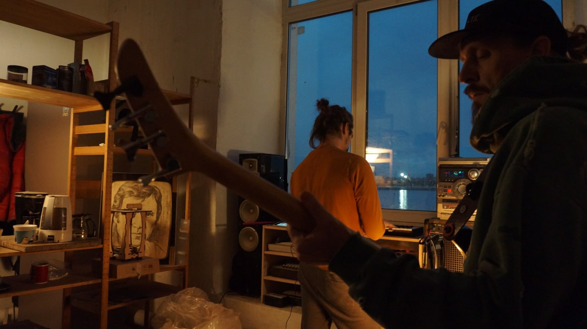

ПИЛИМ
Мастерская звука и дерева
в Севкабель-Порту
«Пилим и Пилим» — независимая мастерская, объединяющая ремесло, музыку и культуру совместного творчества. Мы создаём предметы из дерева, строим музыкальные инструменты, проводим встречи и исследуем, как материалы, звук и люди могут вдохновлять друг друга.

Пьем чай
Пауза — настройка слуха. Завариваем, разливаем, молчим. Слушаем воду, стук пиал, дыхание залива. Чаем занимается Хранитель пауз. Посуда — ручная работа, можно заполучить.
Делаем классные деревяшки
Чайные принадлежности и другая красота из дерева разных пород. Масло вместо лака. Слышишь? — это дерево дышит. Каждая поверхность хранит след инструмента и времени.

Строим музыкальные инструменты
Гравитон — гравитационный аккорд. Гул планетарного масштаба. Кахон Фибоначчи — перкуссионный ящик в золотой пропорции. Сухой глубокий бас. Монохорд — одна струна, сто смыслов. Медитация в дереве и звуке.
Играем музыку
Каждая встреча заканчивается общей игрой. Без нот, без правил. Кто-то задаёт ритм на кахоне, кто-то ласкает монохорд, кто-то просто сидит. Записываем фрагмент — он уходит в закрытый чат «заварили-запилили».